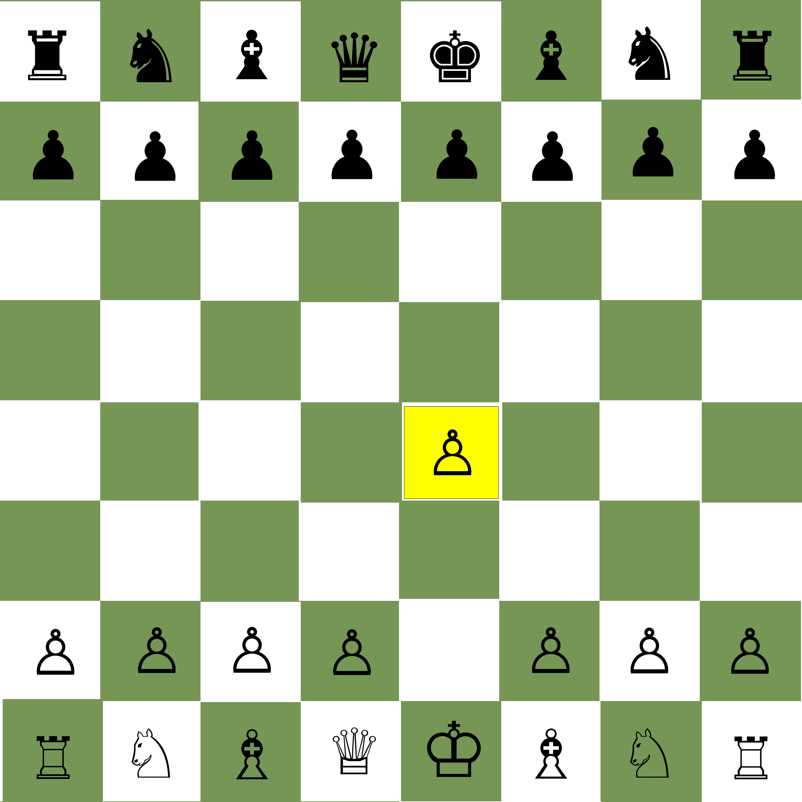
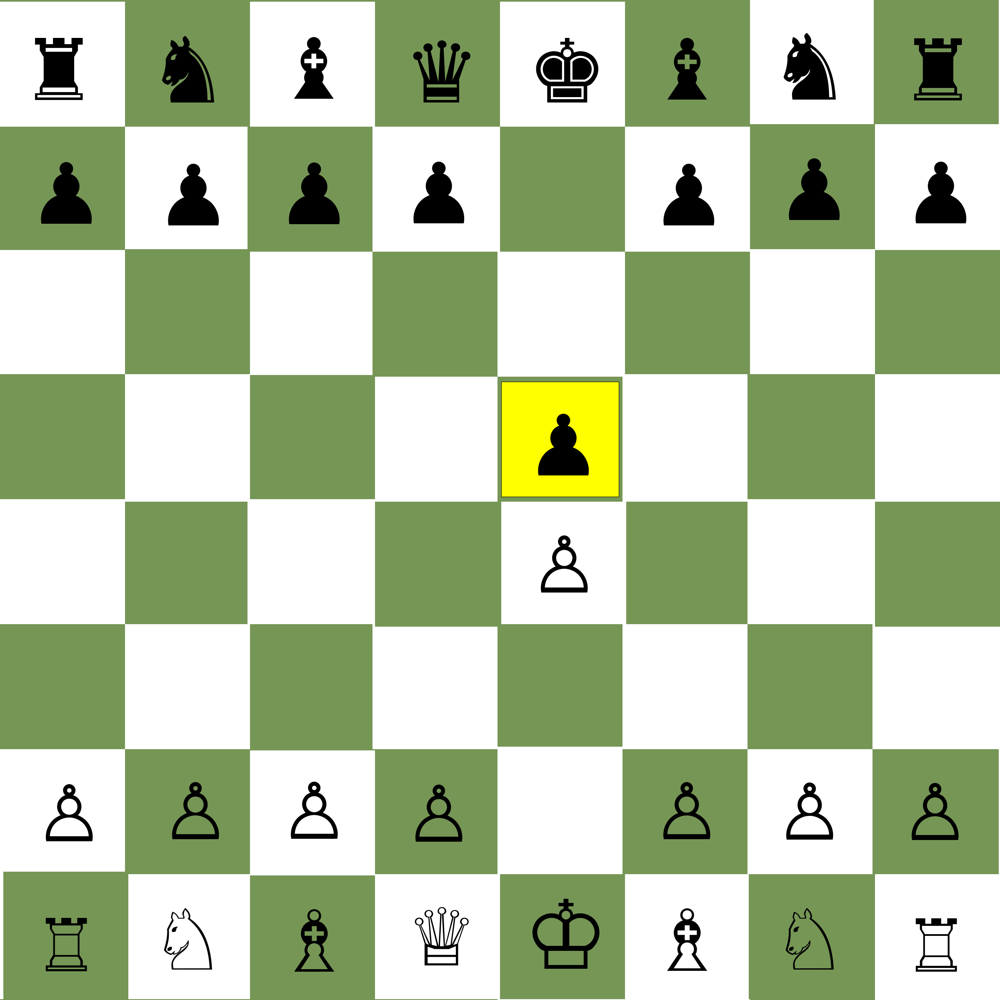
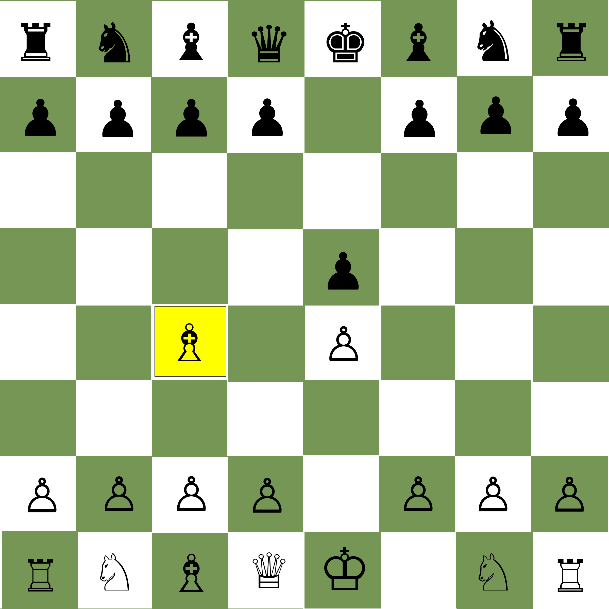
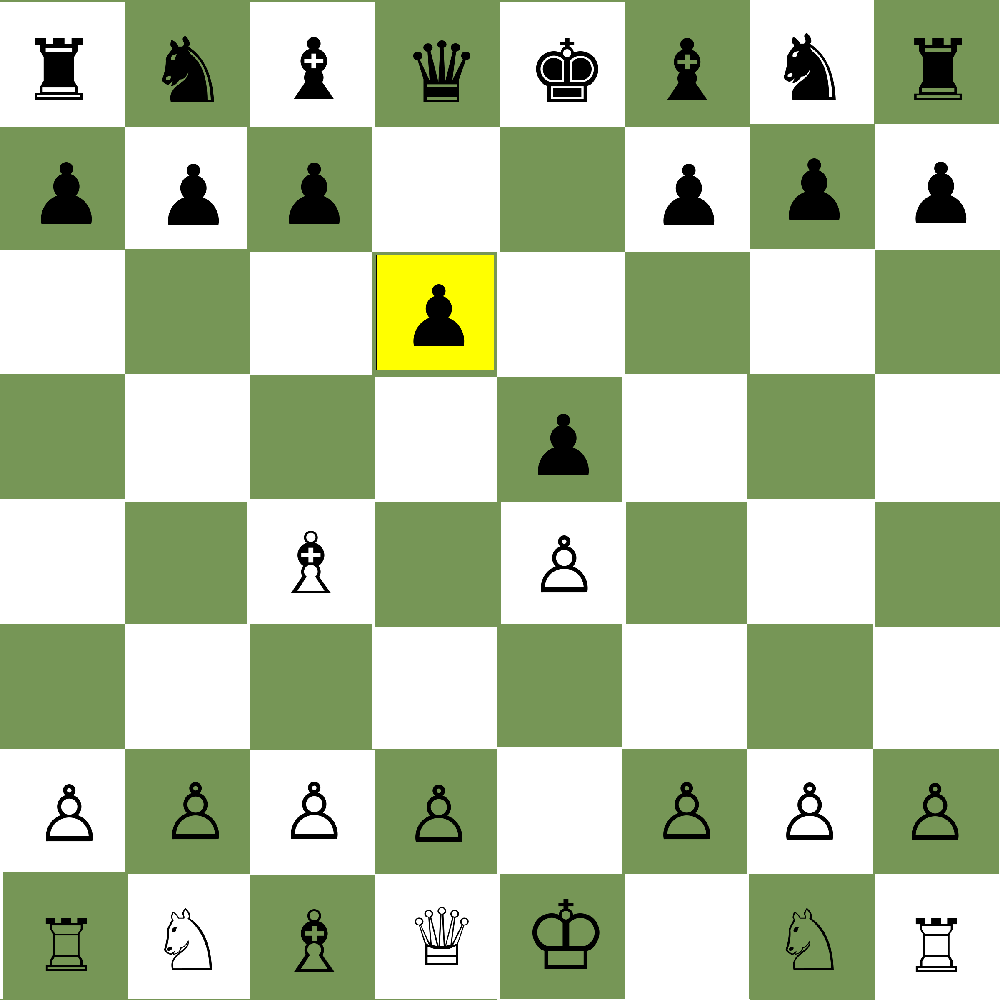
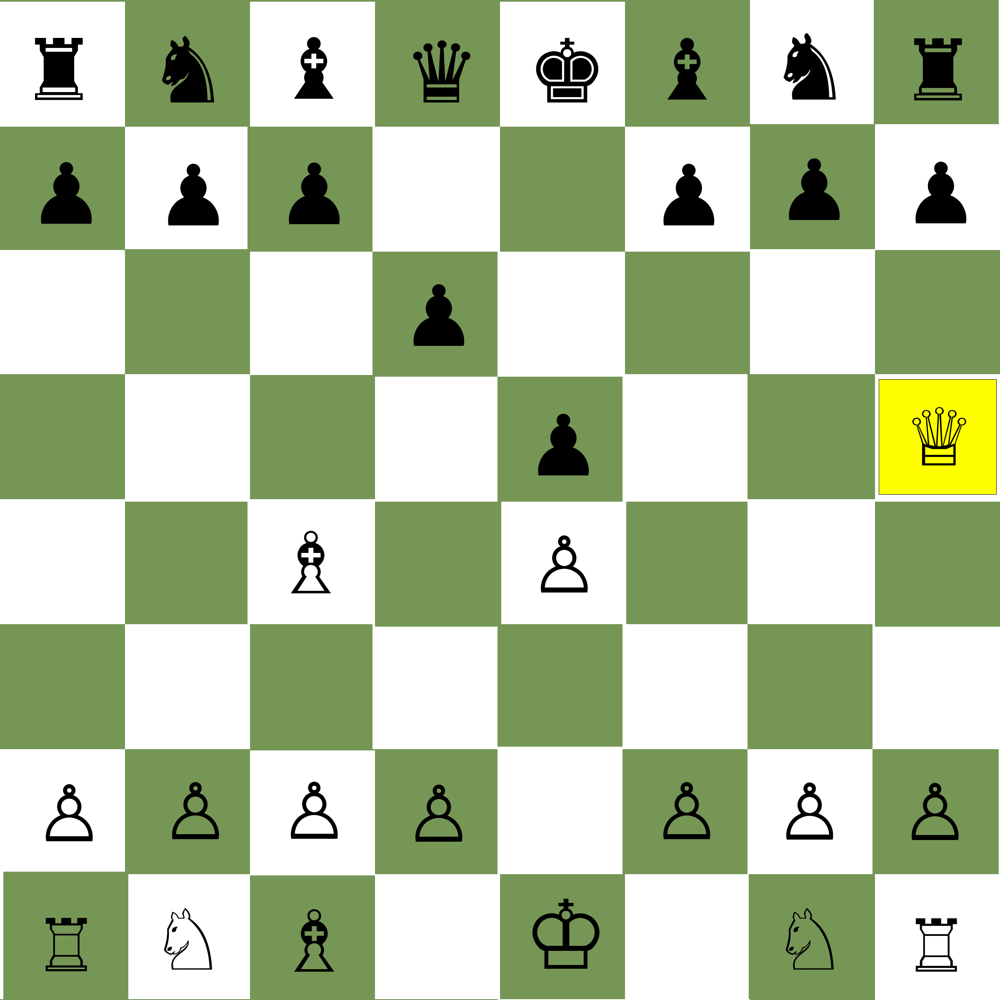
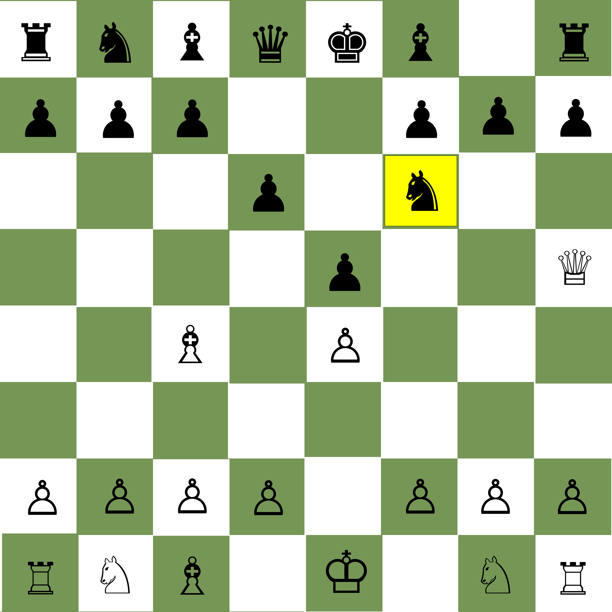
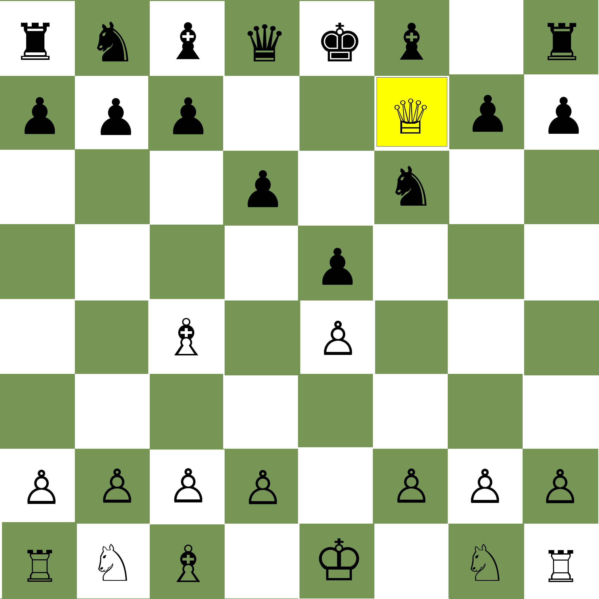

What you really want to know:
How to Checkmate in Four Moves
Check out the pictures below to see this famous checkmate.
In the above image white has moved his king's pawn forward two squares.
The player with the black pieces has responded with the same move.
White has moved his king bishop to attack the pawn in-front of his opponents king bishop.
Black has moved his queen pawn forward one square.
White has developed his queen to five squares in-front of his king's rook. It too eyes the same square as his light squared bishop.
Black sensing danger, develops his king knight to attack the white queen but it's too late.
White's queen has taken the pawn in-front of the king's bishop. Black is checkmated!
Congratulation's! You now know one of the shortest methods to checkmate another player. Most players that are beginners will not know how block this, so now you know, don't fall for it!
If you're interested in chess notation, here's the above game to get you started, notice you don't put a "P" in-front of a pawn move. Other special moves like castling kingside are O-O and queenside O-O-O. A plus sign, "+" is check and the hashtag # is Checkmate!
| Move | White | Black |
|---|---|---|
| 1. | e4 | e5 |
| 2. | Bc4 | d6 |
| 3. | Qh5 | Nf6 |
| 4. | Qxf7# |